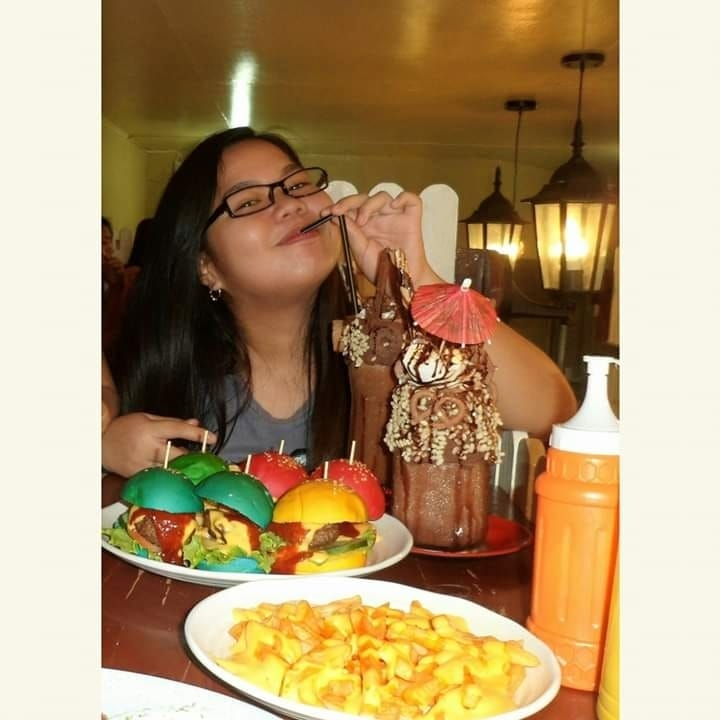

Welcome to my Profile!
I'm MARY GENE R. JAVIER


|
 |
Hello My name is Mary Gene R. Javier. I am currently taking Bachelor of Science in Information Technology as a second-year student in Pangasinan State University-Urdaneta Campus. I grew up as an only girl and youngest in our family. That’s why my family are overprotective to me, they are always putting so much attention in me especially in providing my needs and wants.
I enjoy watching movies, series, K-Dramas, Kpop, reading books, listening to different genres of music, drawing a simple subject, cooking and writing. My passion for cooking just increased when we had a lockdown due to Covid19, I tried baking which is new to me. I encountered a lot of failures while I started baking which is natural as a part of training. I always tried several ways how to achieve the perfect texture I wanted. Gladly, there’s a good outcome. Every occasion, I always make an effort to bake cakes as a special treat for my family. I always love sharing my recipes to my family especially when they are praising how delicious the foods are.
When they discovered that I have a talent in baking and cooking, my family always want me to cook for them. And they provided some materials for baking that will help me to practice more.